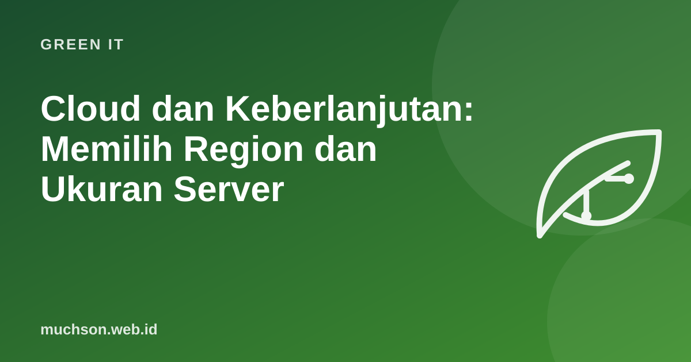

Cloud dan Keberlanjutan: Memilih Region dan Ukuran Server
Memindahkan server ke cloud sering lebih efisien daripada ruang server kantor, karena pusat data besar memiliki pendinginan dan utilisasi yang lebih baik. Tetapi cloud juga mudah diboroskan: server besar yang menganggur, lingkungan uji yang lupa dimatikan, dan data yang disimpan selamanya. Kabar baiknya, langkah yang menghemat emisi biasanya juga menghemat tagihan.

Empat tuas di cloud
Intensitas karbon berbeda per region
Jaringan listrik setiap negara memiliki campuran sumber yang berbeda: batu bara, gas, hidro, surya, angin, nuklir. Satu jam komputasi yang sama bisa menghasilkan emisi beberapa kali lipat berbeda tergantung region. Beberapa penyedia, misalnya Google Cloud, mempublikasikan data karbon per region, dan layanan seperti Electricity Maps menampilkan intensitas karbon jaringan secara hampir real-time.
Region yang lebih hijau tidak selalu tepat: data pribadi warga Indonesia mungkin perlu memenuhi ketentuan lokasi dan pelindungan data, dan latensi bagi pengguna juga penting. Seimbangkan dengan kebutuhan hukum dan performa.
Rightsizing: contoh perhitungan
Carbon-aware computing
Pekerjaan yang tidak harus segera selesai, seperti backup, render video, pelatihan model, atau pemrosesan laporan malam, bisa digeser ke jam atau region ketika intensitas karbon listrik lebih rendah. Green Software Foundation mengembangkan Carbon Aware SDK untuk membantu menjadwalkan beban kerja seperti ini.
# Ide sederhana (pseudo-code): jadwalkan job fleksibel
intensitas = ambil_intensitas_karbon(region="...", jam_berikutnya=12)
jam_terbaik = min(intensitas, key=lambda x: x.gram_per_kwh)
jadwalkan(job="render-laporan-bulanan", pada=jam_terbaik.waktu)Data juga punya jejak
- Atur kebijakan siklus hidup: pindahkan data lama ke kelas penyimpanan arsip, hapus yang tidak diperlukan.
- Hapus snapshot dan cadangan yang sudah kedaluwarsa sesuai kebijakan retensi.
- Kompres log dan batasi masa simpannya.
- Hindari menyalin dataset besar berulang kali antar region.
Tanya jawab
Apakah cloud selalu lebih hijau dari server sendiri?
Bagaimana melihat emisi akun cloud saya?
Apa itu FinOps dan hubungannya?
Sumber dan bacaan lanjut
- Google Cloud: Carbon free energy for Google Cloud regions
- Electricity Maps: live carbon intensity
- Green Software Foundation: Carbon Aware SDK